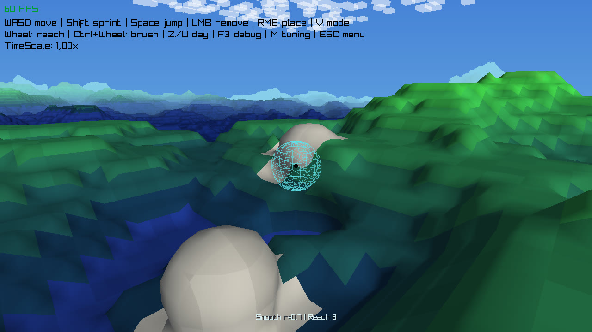

Own build · 2026
VoxelTerraformer
An experimental voxel world in C#, focused on chunk-based terrain, real-time terraforming and a clean, extensible architecture. The goal was never a finished game — it is a technical sandbox for working out how voxel engines hold together.
- Language
- C#
- Rendering
- raylib
- World
- Chunk-based, procedurally generated
- Editing
- Real-time place and remove
- Scope
- Technical sandbox

What it does
- Chunk-based voxel world architecture
- Real-time block placement and removal
- Precise voxel raycasting driven by mouse and keyboard
- Simple procedural terrain generation
- Clean separation between world logic, rendering and utilities
Why raycasting is the hard part
Placing a block is easy once you know which block the cursor is pointing at, and that is the part that has to be exact. A ray stepped in fixed increments either misses thin geometry or costs far too many samples at distance. The engine instead walks the voxel grid cell by cell, so the block under the crosshair is identified exactly, at any range, and placement lands on the correct adjacent face rather than one voxel off.
The architecture is the point
World logic, rendering and utilities are kept strictly apart. The world does not know how it is drawn, and the renderer does not mutate world state. That separation is what makes the chunking tractable: a chunk can be regenerated, remeshed or skipped without any of that leaking into game logic.
| Action | Input |
|---|---|
| Move camera | W A S D |
| Look around | Mouse |
| Remove block | Left mouse button, or O |
| Place block | Right mouse button, or P |
raylib was chosen deliberately over a full engine: it hands you a window, an input queue and a draw call, and nothing else. Everything above that — chunk meshing, the terrain generator, the raycast — had to be written, which was the entire point of the exercise.
